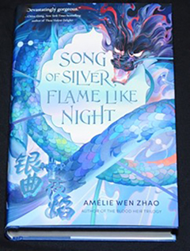
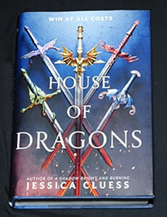
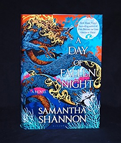
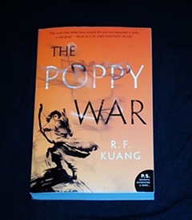
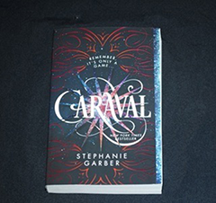
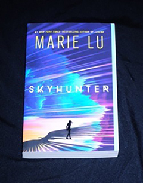

Famous Read

In a fallen kingdom, one girl carries the key to its forgotten past- and the demons that sleep at its heart...
Once, Lan had a different name. Now, she goes by the one the Elantian colonizers gave her when they invaded her
kingdom, killed her mother, and outlawed her people's magic.
Song of Silver Flame Like Night

In House of Dragons, Five Second-Borns Find Themselves in an Unexpected Situation. With the emperor dead, the five royal
families of Etrusia prepare to send their first-borns and their dragon companions to compete for the open throne
House of Dragons

“A Day of Fallen Night,” a striking standalone prequel to “Priory,” interweaves the stories of three women — Tunuva, Glorian,
and Dumai — from three wildly different fantastical cultures. Yet they are united through their devotion to their loved ones
and quests to hunt down the demonic wyrms which threaten their world
A Day Of Fallen Night

The Poppy War is the story of passionate yet ruthless Fang Runin, also known as Rin, who grows up poor, orphaned by a previous war.
But she studies and gets into an elite military academy, and develops a gift for shamanism that lets her call upon the fire powers
of a vengeful Phoenix god.
The Poppy War

Welcome, welcome to Caraval―Stephanie Garber's sweeping tale of two sisters who escape their ruthless father when they enter the dangerous
intrigue of a legendary game. Scarlett has never left the tiny island where she and her beloved sister, Tella, live with their powerful,
and cruel, father.
Caraval

Skyhunter by Marie Lu. This novel is about Talin, a striker for Mara, the last free nation as she fights to keep the Karensa Federation away
from her home. The Federation creates Ghosts by taking humans and changing the way they look and act.Nov